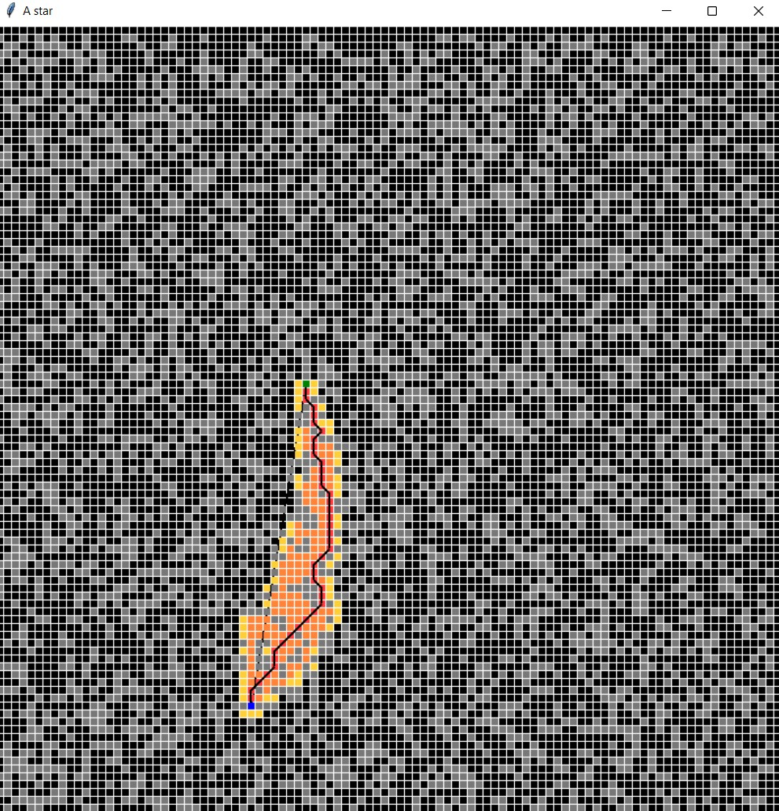
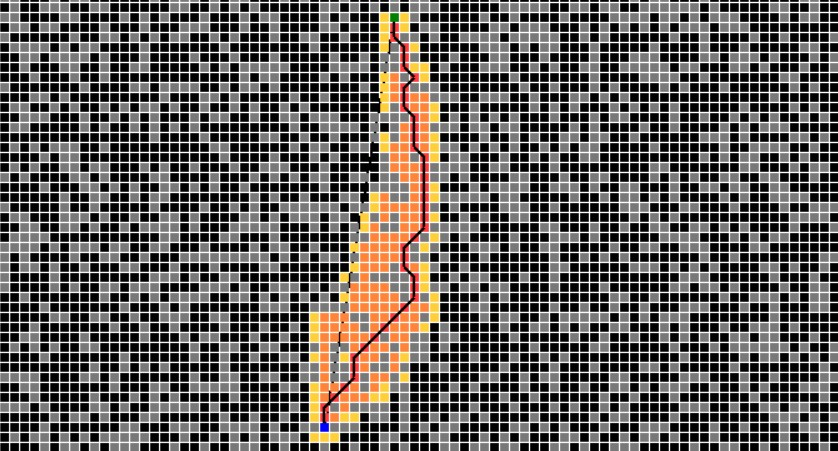
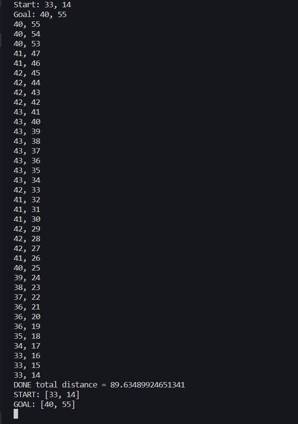

A* Path Planning
I implemented the A* search algorithm to be used as an offline path planner for UAV Forge's autonomous drone, a senior design project that participates in the AUVSI SUAS competition. The main requirements for the offline planner were for it to generate a path that would pass through waypoints and avoid pre-defined obstacles in the shortest amount of time.
Above is an example of the algorithm successfully finding the shortest path from a start to goal node through an obstacle-filled environment. The gray tiles or nodes represent randomly generated obstacles that cannot be traveled through.
Here is a clearer view of the figure. The blue and green nodes are the start and goal, respectively. The yellow nodes represent spaces the algorithm has "seen" but not actually traveled to. The orange nodes are alternate paths that the algorithm has explored. Finally, the red is the final path that yields the least distance.

Above is a representation of the path as a series of x-y coordinates. So how
exactly does this algorithm work?
A* is essentially a "guided" version of Djikstra's algorithm, which seeks to
map out every node in the environment of interest before deciding on the shortest
path available. Djikstra's follows the cost function f(n) = g(n), which states that
the cost f at every node is a value g that represents the difficulty to reach
node n. The shortest path will minimize this cost function. However, before
it can calculate the ideal route, Djikstra's must assign costs to every possible
node. While exploring nodes, it exhibits a behavior akin to trickling water
branching in every available direction. In an open environment with g-costs
associated with distance, this is not computationally feasible.
A* builds upon the idea of minimizing a cost function by revising it to f(n) =
g(n) + h(n). This new term is the heuristic cost, an estimate of the difficulty
of reaching the goal from node n. In most scenarios, this is simply the distance
between the current node and goal. The cost at every node is therefore its distance
from the start in addition to its distance from the end. The closer a node is to
the goal, the smaller its cost will be. The addition of the heuristic directs the
Djikstra's random "trickle" into streams that will always progress towards the
goal. This is apparent in the first image, where the colored tiles largely
highlighted a path towards the end node.
Although A* will almost always return an optimal path, it is not without its
weaknesses. For one, it has a large space complexity attributed to the need
to store all explored nodes before calculating the shortest path. It is slower
to compute than the likes of RRT (rapidly-exploring random tree), and demands
certainty and information in its environemnt to be successful in real-world scenarios.